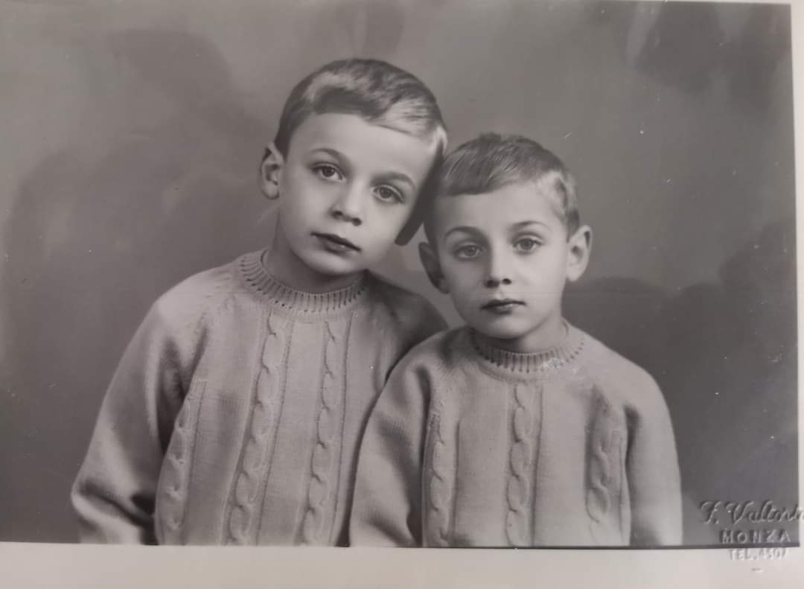
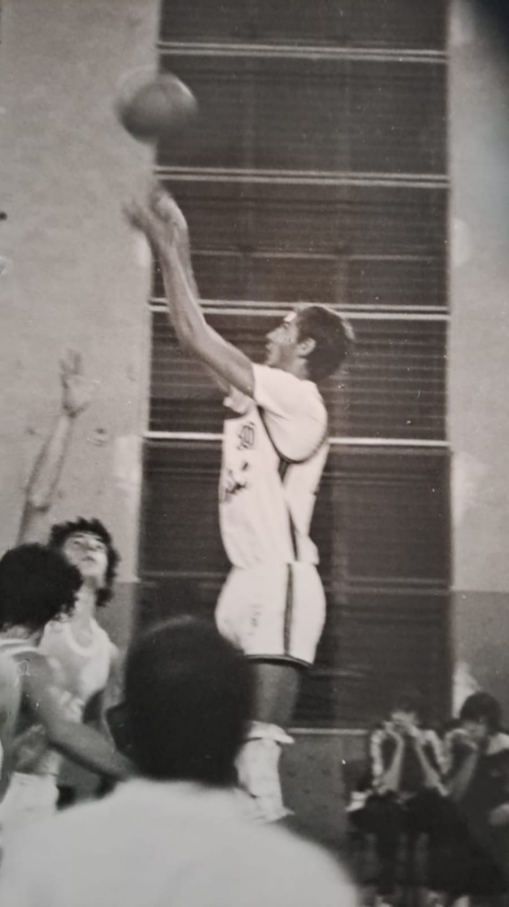
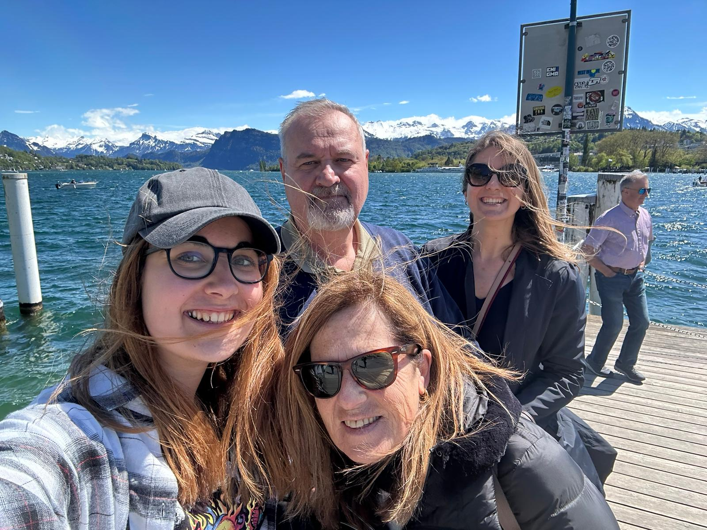

63esimo Compleanno di Paolo Giorgi
UN TRAGUARDO STORICO PER L'INGEGNERIA FAMIGLIARE

Un'immagine recente del 'Modello Paolo Giorgi 1963' in piena fase operativa.
Nel lontano 1963, un'annata eccezionale per il design e la robustezza, veniva lanciato sul mercato un prototipo unico nel suo genere (meno male). Oggi, dopo 63 anni di onorato servizio, test su strada e innumerevoli gelati, questo modello leggendario festeggia il suo anniversario.
I nostri inviati confermano che, nonostante qualche chilometro in più sul contachilometri della vita, il motore gira ancora come un orologio (specialmente dopo un piatto di pasta). Le sue prestazioni sulle battute discutibili e i commenti incommentabili rimangono imbattute a livello nazionale.
In una rara intervista rilasciata recentemente, Paolo Giorgi ha dichiarato: "Sto solo riposando gli occhi". Un'icona di resilienza familiare.
METEO DEL GIORNO
Sole con alte probabilità di sonnellini improvvisi.


Pensi di conoscere Paolo Giorgi?
1. Paolo ammette mai di avere torto?
2. Qual è la sua frase tipica?
3. genere di film che di sicuro ha visto
4. giornata ideale
Conferito a Paolo Giorgi per aver completato 63 stagioni con la grinta di una finale di basket. Nemmeno le antiche civiltà Maya o un'invasione aliena avrebbero potuto prevedere la sua vera impresa: sopravvivere tutti i giorni circondato da 3 donne e 2 gatti!.
Tanti Auguri di Buon Compleanno per i tuoi 63 Anni! ❤️
Conferito con amore dalla tua famiglia